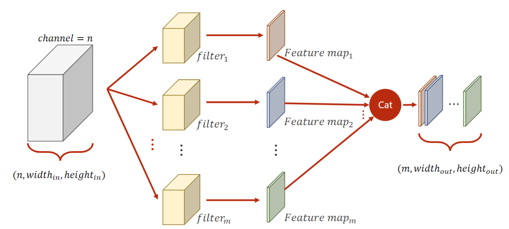
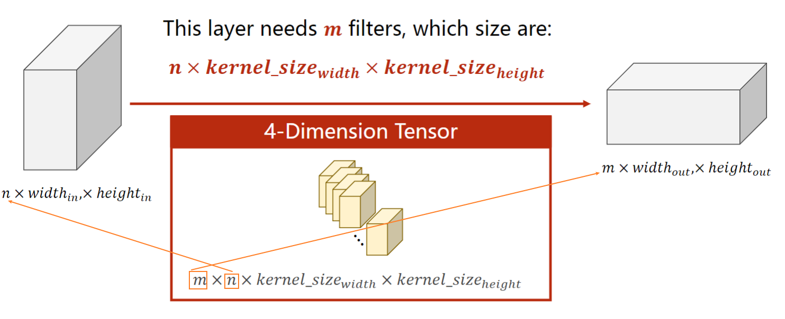
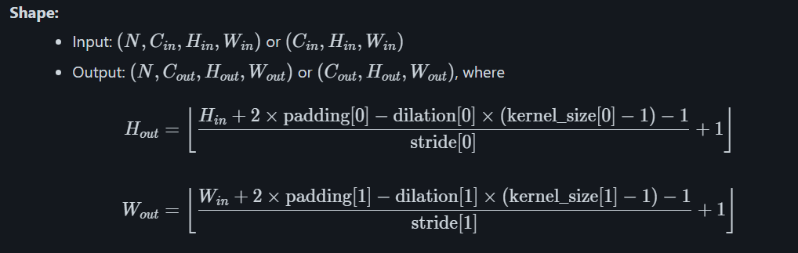
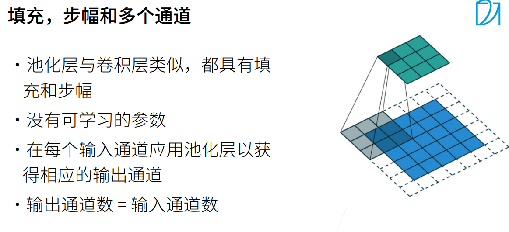
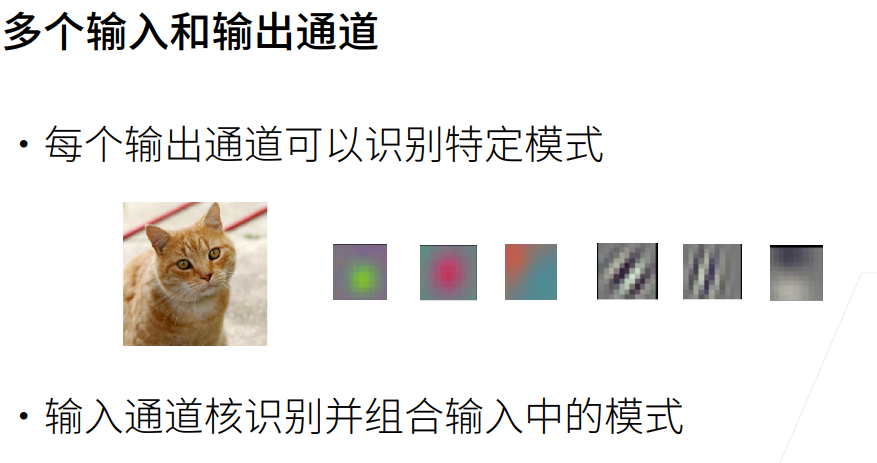

《PyTorch深度学习实践》完结合集
PyTorch深度学习快速入门教程
线性模型
穷举法
1 2 import numpy as npimport matplotlib.pyplot as plt
1 2 x_data = [1.0 , 2.0 , 3.0 ] y_data = [2.0 , 4.0 , 6.0 ]
1 2 3 4 5 6 7 def forward (x ): return w*x def loss (x,y ): y_pred = forward(x) return (y_pred-y)**2
1 2 3 w_list = [] mse_list = []
1 2 3 4 5 6 7 8 9 10 11 12 for w in np.arange(0.0 ,4.1 ,0.1 ): print ("w=" ,w) l_sum=0 for x_val,y_val in zip (x_data,y_data): y_pred_val = forward(x_val) loss_val = loss(x_val,y_val) l_sum+=loss_val print ('\t' ,x_val,y_val,y_pred_val,loss_val) print ('MSE=' ,l_sum/3 ) w_list.append(w) mse_list.append(l_sum/3 )
1 2 3 4 plt.plot(w_list,mse_list) plt.ylabel('Loss' ) plt.xlabel('w' ) plt.show()
<IPython.core.display.Javascript object>
课后作业
作业题目：实现线性模型（y=wx+b）并输出loss的3D图像。
1 2 3 %matplotlib inline import numpy as npimport matplotlib.pyplot as plt
1 2 3 4 5 6 def forward (x ): return w*x+b def loss (x,y ): y_pred = forward(x) return (y_pred-y)**2
1 2 3 x_data = [1.0 ,2.0 ,3.0 ] y_data = [5.0 ,8.0 ,11.0 ]
1 2 3 4 5 6 7 8 9 10 11 w_list=np.arange(0 ,4.1 ,0.1 ) b_list=np.arange(0 ,4.1 ,0.1 ) [w,b]=np.meshgrid(w_list,b_list) loss_sum=0 for x_val,y_val in zip (x_data,y_data): y_pred_val = forward(x_val) loss_sum+=loss(x_val,y_val)
[[210. 199.34 188.96 ... 1.76 1.74 2. ]
[205.23 194.69 184.43 ... 1.55 1.65 2.03]
[200.52 190.1 179.96 ... 1.4 1.62 2.12]
...
[ 70.92 64.82 59. ... 35.96 40.5 45.32]
[ 68.43 62.45 56.75 ... 38.03 42.69 47.63]
[ 66. 60.14 54.56 ... 40.16 44.94 50. ]]
1 from mpl_toolkits.mplot3d import Axes3D
1 2 3 4 5 6 7 fig = plt.figure() ax = fig.add_subplot(1 ,1 ,1 , projection='3d' ) ax.plot_surface(w, b, loss_sum/3 ) ax.set_xlabel("w" ) ax.set_ylabel("b" ) ax.set_zlabel("loss" ) plt.show()
梯度下降
只能找到局部最优,无法确保找到全局最优
鞍点问题比较重要
批量梯度下降
使用整个训练集计算梯度
每次迭代稳定但计算量大
适合小型数据集
随机梯度下降
每次使用单个样本
收敛快但震荡大
适合在线学习
小批量梯度下降
上述两种的折中
平衡了计算效率和稳定性
最常用的方法
batch_size 是重要超参数
1 2 3 4 import matplotlib.pyplot as pltx_data = [1.0 , 2.0 , 3.0 ] y_data = [2.0 , 4.0 , 6.0 ]
1 2 3 4 5 6 7 8 9 10 11 12 13 def forward (x ): return w*x def cost (xs,ys ): cost = 0 for x,y in zip (xs,ys): cost+=(y-forward(x))**2 return cost/len (xs) def gradient (xs,ys ): grad = 0 for x,y in zip (xs,ys): grad+=2 *(x*w-y)*x return grad/len (xs)
1 2 3 epoch_list=[] cost_list=[] print ('predict (before training)' ,4 ,forward(4 ))
predict (before training) 4 4.0
1 2 3 4 5 6 7 for epoch in range (100 ): cost_val = cost(x_data,y_data) grad_val = gradient(x_data,y_data) w -=0.01 *grad_val print ('epoch:' , epoch, 'w=' , w, 'loss=' , cost_val) epoch_list.append(epoch) cost_list.append(cost_val)
1 2 3 4 5 print ('predict (after training)' , 4 , forward(4 ))plt.plot(epoch_list,cost_list) plt.ylabel('cost' ) plt.xlabel('epoch' ) plt.show()
1 2 3 4 5 6 7 8 9 def forward (x ): return w*x def loss (x,y ): return (y-forward(x))**2 def gradient (x,y ): return 2 *x*(w*x-y)
1 2 3 4 w=1 epoch_list=[] cost_list=[] print ('predict (before training)' ,4 ,forward(4 ))
1 2 3 4 5 6 7 8 9 10 for epoch in range (100 ): for x,y in zip (x_data,y_data): y_hat=forward(x) loss_val=loss(x,y) grad_val=gradient(x,y) w-=0.01 *grad_val print ("\tgrad:" , x, y,grad_val) epoch_list.append(epoch) cost_list.append(loss_val) print ("progress:" ,epoch,"w=" ,w,"loss=" ,loss)
1 2 3 4 5 print ('predict (after training)' , 4 , forward(4 ))plt.plot(epoch_list,cost_list) plt.ylabel('loss' ) plt.xlabel('epoch' ) plt.show()
反向传播
Tensor类与计算图
1 2 3 4 5 6 7 8 w = torch.tensor([1.0 ]) w.requires_grad=True print (w)print (w.data)print (w.type ())print (w.data.type ())print (w.grad)print (type (w.grad))
tensor([1.], requires_grad=True)
tensor([1.])
torch.FloatTensor
torch.FloatTensor
None
<class 'NoneType'>
反向传播
1 2 x_data = [1.0 , 2.0 , 3.0 ] y_data = [2.0 , 4.0 , 6.0 ]
1 2 w = torch.tensor([1.0 ]) w.requires_grad = True
1 2 3 4 def forward (x ): return w*x def loss (x,y ): return (y-forward(x))**2
1 print ("predict (before training)" , 4 , forward(4 ).item())
predict (before training) 4 4.0
1 2 3 4 5 6 7 8 9 for epoch in range (100 ): for x,y in zip (x_data,y_data): l = loss(x,y) l.backward() print ('\tgrad:' , x, y, w.grad.item()) w.data = w.data - 0.01 *w.grad.data w.grad.data.zero_() print ('progress:' , epoch, l.item()) print ("predict (after training)" , 4 , forward(4 ).item())
作业
以y = w*x+b 为例子实现反向传播
1 2 3 4 5 6 7 8 9 10 11 12 13 14 15 16 17 18 19 20 21 22 23 24 25 26 27 import torchw = torch.Tensor([1.0 ]) w.requires_grad=True b = torch.Tensor([0 ]) b.requires_grad=True x_data = [1.0 , 2.0 , 3.0 ] y_data = [2.0 , 4.0 , 6.0 ] def forward (x ): return w*x+b def loss (x,y ): return (y-forward(x))**2 for epoch in range (100 ): for x,y in zip (x_data,y_data): l = loss(x,y) l.backward() w.data=w.data-0.01 *w.grad.data b.data=b.data-0.01 *b.grad.data w.grad.data.zero_() b.grad.data.zero_() print ('progress:' , epoch, l.item()) print ("predict (after training)" , 4 , forward(4 ).item())
y=w1x²+w2x+b为例子实现反向传播
1 2 3 4 5 6 7 8 9 10 11 12 13 14 15 16 17 18 19 20 21 22 23 24 25 26 27 28 29 30 31 import torchw1 = torch.Tensor([1.0 ]) w1.requires_grad=True w2 = torch.Tensor([1.0 ]) w2.requires_grad=True b = torch.Tensor([0 ]) b.requires_grad=True x_data = [1.0 , 2.0 , 3.0 ] y_data = [2.0 , 4.0 , 6.0 ] def forward (x ): return w1*x*x+w2*x+b def loss (x,y ): return (y-forward(x))**2 for epoch in range (100 ): for x,y in zip (x_data,y_data): l = loss(x,y) l.backward() w1.data=w1.data-0.01 *w1.grad.data w2.data=w2.data-0.01 *w2.grad.data b.data=b.data-0.01 *b.grad.data w1.grad.data.zero_() w2.grad.data.zero_() b.grad.data.zero_() print ('progress:' , epoch, l.item()) print ("predict (after training)" , 4 , forward(4 ).item())
Pytorch实现线性回归
init与call函数
init : 类的初始化函数，类似于c++的构造函数call _: 使得类对象具有类似函数的功能。
init 作用：用于初始化模型对象，定义模型的结构和参数。
定义网络层：在这里，你声明模型将由哪些层组成（例如，线性层 nn.Linear、卷积层 nn.Conv2d、激活函数 nn.ReLU 等）。
初始化参数：这些层内部的权重（weights）和偏置（biases）参数会被自动创建并初始化。
执行必要的设置：调用父类的 init () 方法等。
init 负责搭建模型的骨架，它回答了"这个模型由哪些部分组成？"的问题。它只会在你创建模型实例时被调用一次。
call 作用:让模型实例能够像函数一样被调用，例如 output = model(input_data)。
nn.Module 是所有神经网络单元（neural network modules）的基类,pytorch在nn.Module中，实现了__call__方法，而在__call__方法中调用了forward函数。
你不需要自己重写 call 方法。
你必须自己定义 forward 方法。 forward 才是真正定义数据如何在前向传播中流动的地方。
call 是 forward 的封装器和触发器。永远使用 model(x) 而不是直接调用 model.forward(x)，因为前者能确保 PyTorch 的所有机制（如钩子）正常工作。
1 2 3 4 5 6 7 8 9 10 11 12 13 14 15 16 17 18 19 20 21 22 23 24 25 26 27 import torchclass MyNeuralNetwork (torch.nn.Module): def __init__ (self, input_size, hidden_size, output_size ): super (MyNeuralNetwork, self).__init__() self.layer1 = torch.nn.Linear(input_size, hidden_size) self.activation = torch.nn.ReLU() self.layer2 = torch.nn.Linear(hidden_size, output_size) def forward (self, x ): x = self.layer1(x) x = self.activation(x) x = self.layer2(x) return x model = MyNeuralNetwork(input_size=784 , hidden_size=128 , output_size=10 ) dummy_input = torch.randn(4 , 784 ) output = model(dummy_input) print (output.shape)
torch.Size([4, 10])
nn.module中的API
loss.backward()：计算梯度,即进行反向传播。
optimizer.step()：执行更新（“实施修改”）。
optimizer.zero_grad()：准备下一次计算（“重置记录”）。
实现线性回归
1 2 3 4 import torchx_data = torch.tensor([[1.0 ],[2.0 ],[3.0 ]]) y_data = torch.tensor([[2.0 ],[4.0 ],[6.0 ]])
1 2 3 4 5 6 7 8 9 10 class LinearModel (torch.nn.Module): def __init__ (self ): super (LinearModel,self).__init__() self.linear = torch.nn.Linear(1 ,1 ) def forward (self,x ): y_pred = self.linear(x) return y_pred
1 2 3 4 model = LinearModel() criterion = torch.nn.MSELoss(reduction='sum' ) optimizer = torch.optim.SGD(model.parameters(),lr=0.01 )
1 2 3 4 5 6 7 8 9 10 11 12 13 14 15 16 for epoch in range (100 ): y_pred = model(x_data) loss = criterion(y_pred,y_data) print (epoch,loss.item()) loss.backward() optimizer.step() optimizer.zero_grad() print ('w=' ,model.linear.weight.item())print ('b=' ,model.linear.bias.item())x_test = torch.tensor([[4.0 ]]) y_test = model(x_test) print ('y_pred = ' , y_test.data)
常用的优化器与损失函数
回归任务损失函数
MSELoss（均方误差损失） 1 2 3 4 5 6 7 8 9 10 11 12 13 14 15 16 17 18 import torchimport torch.nn as nncriterion = nn.MSELoss() criterion = nn.MSELoss(reduction='mean' ) criterion = nn.MSELoss(reduction='sum' ) criterion = nn.MSELoss(reduction='none' ) y_pred = torch.tensor([[2.0 ], [4.0 ], [6.0 ], [8.0 ]]) y_true = torch.tensor([[1.8 ], [4.2 ], [5.9 ], [8.1 ]]) loss = criterion(y_pred, y_true) print (f"MSE Loss: {loss.item()} " )
L1Loss（平均绝对误差损失） 1 2 3 4 5 6 7 8 criterion = nn.L1Loss() loss = criterion(y_pred, y_true) print (f"L1 Loss: {loss.item()} " )
SmoothL1Loss（平滑L1损失） 1 2 3 4 5 6 7 8 9 10 criterion = nn.SmoothL1Loss() loss = criterion(y_pred, y_true) print (f"Smooth L1 Loss: {loss.item()} " )
HuberLoss 1 2 3 4 5 6 7 criterion = nn.HuberLoss() loss = criterion(y_pred, y_true) print (f"Huber Loss: {loss.item()} " )
分类任务损失函数
BCELoss（二分类交叉熵损失） 1 2 3 4 5 6 7 8 9 10 11 12 criterion = nn.BCELoss() y_pred = torch.tensor([[0.9 ], [0.1 ], [0.8 ], [0.2 ]]) y_true = torch.tensor([[1.0 ], [0.0 ], [1.0 ], [0.0 ]]) loss = criterion(y_pred, y_true) print (f"BCE Loss: {loss.item()} " )
BCEWithLogitsLoss（带logits的BCE损失） 1 2 3 4 5 6 7 8 9 10 11 12 13 14 criterion = nn.BCEWithLogitsLoss() y_pred_logits = torch.tensor([[2.0 ], [-2.0 ], [1.5 ], [-1.5 ]]) y_true = torch.tensor([[1.0 ], [0.0 ], [1.0 ], [0.0 ]]) loss = criterion(y_pred_logits, y_true) print (f"BCEWithLogits Loss: {loss.item()} " )pos_weight = torch.tensor([3.0 ]) criterion_balanced = nn.BCEWithLogitsLoss(pos_weight=pos_weight)
CrossEntropyLoss（多分类交叉熵损失） 1 2 3 4 5 6 7 8 9 10 11 12 13 14 15 16 17 18 19 criterion = nn.CrossEntropyLoss() y_pred = torch.tensor([ [2.0 , 1.0 , 0.1 ], [0.5 , 2.0 , 0.3 ], [0.2 , 0.1 , 3.0 ], [1.0 , 2.0 , 0.5 ] ]) y_true = torch.tensor([0 , 1 , 2 , 1 ]) loss = criterion(y_pred, y_true) print (f"CrossEntropy Loss: {loss.item()} " )class_weights = torch.tensor([1.0 , 2.0 , 1.0 ]) criterion_weighted = nn.CrossEntropyLoss(weight=class_weights)
NLLLoss（负对数似然损失） 1 2 3 4 5 6 7 8 9 criterion = nn.NLLLoss() log_softmax = nn.LogSoftmax(dim=1 ) y_pred_log = log_softmax(y_pred) loss = criterion(y_pred_log, y_true) print (f"NLL Loss: {loss.item()} " )
其他损失函数
CosineEmbeddingLoss（余弦相似度损失） 1 2 3 4 5 6 7 8 9 10 criterion = nn.CosineEmbeddingLoss() x1 = torch.tensor([[1.0 , 2.0 ], [3.0 , 4.0 ]]) x2 = torch.tensor([[1.0 , 2.0 ], [3.0 , 4.0 ]]) target = torch.tensor([1 , 1 ]) loss = criterion(x1, x2, target) print (f"Cosine Embedding Loss: {loss.item()} " )
TripletMarginLoss（三元组损失） 1 2 3 4 5 6 7 8 9 10 criterion = nn.TripletMarginLoss() anchor = torch.tensor([[1.0 , 2.0 ]]) positive = torch.tensor([[1.1 , 2.1 ]]) negative = torch.tensor([[5.0 , 6.0 ]]) loss = criterion(anchor, positive, negative) print (f"Triplet Margin Loss: {loss.item()} " )
SGD（随机梯度下降）
1 2 3 4 5 6 7 8 9 10 11 12 13 14 15 16 17 18 19 20 21 22 import torch.optim as optimoptimizer = optim.SGD(model.parameters(), lr=0.01 ) optimizer = optim.SGD( model.parameters(), lr=0.01 , momentum=0.9 , weight_decay=1e-4 , nesterov=False ) for epoch in range (epochs): for inputs, targets in dataloader: optimizer.zero_grad() outputs = model(inputs) loss = criterion(outputs, targets) loss.backward() optimizer.step()
Adam（自适应矩估计）
1 2 3 4 5 6 7 8 9 10 11 12 13 14 optimizer = optim.Adam(model.parameters(), lr=0.001 ) optimizer = optim.Adam( model.parameters(), lr=0.001 , betas=(0.9 , 0.999 ), eps=1e-8 , weight_decay=0 , amsgrad=False )
AdamW（Adam with Weight Decay）
1 2 3 4 5 6 7 8 9 10 11 optimizer = optim.AdamW( model.parameters(), lr=0.001 , betas=(0.9 , 0.999 ), eps=1e-8 , weight_decay=0.01 , amsgrad=False )
RMSprop
1 2 3 4 5 6 7 8 9 10 11 optimizer = optim.RMSprop( model.parameters(), lr=0.01 , alpha=0.99 , eps=1e-8 , weight_decay=0 , momentum=0 , centered=False )
Adagrad
1 2 3 4 5 6 7 8 9 10 optimizer = optim.Adagrad( model.parameters(), lr=0.01 , lr_decay=0 , weight_decay=0 , initial_accumulator_value=0 , eps=1e-10 )
Adadelta
1 2 3 4 5 6 7 8 9 optimizer = optim.Adadelta( model.parameters(), lr=1.0 , rho=0.9 , eps=1e-6 , weight_decay=0 )
Adamax
1 2 3 4 5 6 7 8 9 optimizer = optim.Adamax( model.parameters(), lr=0.002 , betas=(0.9 , 0.999 ), eps=1e-8 , weight_decay=0 )
损失函数选择指南：
回归任务 : MSELoss, L1Loss, SmoothL1Loss二分类 : BCEWithLogitsLoss（推荐）, BCELoss多分类 : CrossEntropyLoss相似度学习 : CosineEmbeddingLoss, TripletMarginLoss
优化器选择指南：
推荐默认 : AdamW 或 Adam需要精细调参 : SGD + momentumRNN/LSTM : RMSprop稀疏数据 : Adagrad
逻辑回归
在线性层的后面加上了激活函数(非线性变换)
解决分类问题
分类问题一般采用交叉熵作为损失函数,交叉熵越小说明二者越接近,分类越好
BCELoss 是二分类交叉熵损失，而 CrossEntropyLoss 是交叉熵损失，它更通用，可以同时处理二分类和多分类问题。
核心区别对比表
特性
BCELoss
CrossEntropyLoss
全称 Binary Cross-Entropy Loss
Cross-Entropy Loss
任务类型 二分类 多分类 ，也可用于二分类
输出层要求 每个类别一个** Sigmoid 函数**
整个输出层一个 Softmax 函数
模型输出含义 每个输出节点是一个独立的概率 ，表示属于该类的可能性。所有节点概率之和不等于1。
所有输出节点经过Softmax，表示一个概率分布 。所有节点概率之和为1。
标签格式 浮点数 （Float），通常是0或1。可以是单个值（单标签）或多个值（多标签）。整数 （Long），是类别的索引。例如，3分类任务，标签是0, 1, 2。
损失计算 对每个输出节点 分别计算二元交叉熵，然后可以求平均或求和。
将模型输出的整个分布 与真实标签的 one-hot 编码计算交叉熵。
PyTorch 实现 torch.nn.BCELoss()torch.nn.CrossEntropyLoss()
BCELoss
BCELoss 用于二分类 或多标签分类 问题。在二分类中，虽然只有一个输出节点（例如，用Sigmoid输出一个概率值），但它也可以有多个输出节点，每个节点代表一个独立的“是/否”问题。
核心思想 ：对输出的每一个维度（节点） 都应用一个 Sigmoid 函数，将其压缩到 (0, 1) 区间，然后与目标值（0或1）计算二元交叉熵。
计算公式（对于单个样本的一个输出节点） ： Loss = - [y * log(p) + (1 - y) * log(1 - p)] 其中 y 是真实标签（0或1），p 是模型预测的概率。
PyTorch 示例 ：
1 2 3 4 5 6 7 8 9 10 11 12 13 14 15 import torchimport torch.nn as nnmodel_output = torch.tensor([[ 0.8 , -0.6 , 1.2 ]]) sigmoid = nn.Sigmoid() probabilities = sigmoid(model_output) true_labels = torch.tensor([[1.0 , 0.0 , 1.0 ]]) criterion = nn.BCELoss() loss = criterion(probabilities, true_labels) print (loss)
注意 ：在使用 nn.BCELoss 之前，必须 手动使用 Sigmoid 将输出转换为概率。PyTorch 也提供了 nn.BCEWithLogitsLoss，它结合了 Sigmoid 和 BCELoss，数值计算上更稳定，是更推荐的做法。
CrossEntropyLoss
CrossEntropyLoss 是深度学习中最常用 的分类损失函数，主要用于单标签多分类 问题（一个样本只属于一个类别）。
核心思想 ：对输出的整个向量 应用 Softmax 函数，将其转换为一个概率分布（所有值之和为1），然后计算这个预测分布与真实分布（one-hot 编码）的交叉熵。
关键点 ：
内部已包含 Softmax ：你不需要在模型的最后一层显式地添加 Softmax。nn.CrossEntropyLoss 会在内部自动为你计算 Softmax。标签是类别索引 ：你不需要将标签手动转换为 one-hot 编码，直接提供类别索引（整数）即可。
计算公式（对于单个样本） ： Loss = - log( p_class ) 其中 p_class 是模型预测出的、在真实类别 上的那个概率。
PyTorch 示例 ：
1 2 3 4 5 6 7 8 9 10 11 12 13 14 15 model_output = torch.tensor([[ 2.0 , 1.0 , -0.5 ]]) true_label = torch.tensor([0 ]) criterion = nn.CrossEntropyLoss() loss = criterion(model_output, true_label) print (loss)
如何选择？
如果你的问题是标准的单标签多分类 （如图像分类到10个类别、手写数字识别等）：
毫不犹豫地使用 CrossEntropyLoss 。模型最后一层不要 用任何激活函数（如 Softmax），直接输出 logits。
如果你的问题是二分类或多标签分类 （如判断一张图片中是否同时包含“猫”和“狗”，一个样本可以有多个标签）：
使用 BCEWithLogitsLoss（或 BCELoss + 手动Sigmoid）。
模型的输出节点数等于标签数，每个节点使用 Sigmoid 函数。
如果你的问题是二分类，但想把它当作多分类来处理 ：
你也可以使用 CrossEntropyLoss，此时模型需要两个输出节点 （分别对应“类别0”和“类别1”）。
标签相应地是0或1。
这种方法与使用 BCEWithLogitsLoss 和一个输出节点在数学上是等价的，但具体实现和数值稳定性上可能有细微差别。通常 BCEWithLogitsLoss 对于二分类更直接。
总结
场景
推荐损失函数
模型输出层
标签格式
多分类（单标签） CrossEntropyLoss无激活（Raw Logits）
整数索引（如 [0]）
二分类/多标签 BCEWithLogitsLoss无激活（Raw Logits）
浮点数（如 [1.0, 0.0, 1.0]）
核心区别：CrossEntropyLoss 内部用 Softmax 处理整个输出向量，适用于“多选一”；而 BCELoss 对每个输出节点用 Sigmoid，适用于“每个节点独立判断是/否”。
pytorch实现逻辑回归
1 2 3 import torchx_data = torch.Tensor([[1.0 ], [2.0 ], [3.0 ]]) y_data = torch.Tensor([[0 ], [0 ], [1 ]])
1 2 3 4 5 6 7 8 class LogisticRegressionModel (torch.nn.Module): def __init__ (self ): super (LogisticRegressionModel,self).__init__() self.linear = torch.nn.Linear(1 ,1 ) def forward (self,x ): y_pred=torch.sigmoid(self.linear(x)) return y_pred
1 model = LogisticRegressionModel()
1 2 criterion = torch.nn.BCELoss(size_average= False ) optimizer = torch.optim.SGD(model.parameters(),lr=0.01 )
d:\Environment\Anaconda3\envs\deep\lib\site-packages\torch\nn\_reduction.py:42: UserWarning: size_average and reduce args will be deprecated, please use reduction='sum' instead.
warnings.warn(warning.format(ret))
1 2 3 4 5 6 7 8 9 10 11 12 13 14 15 for epoch in range (100 ): y_pred = model(x_data) loss = criterion(y_pred,y_data) print (epoch, loss.item()) optimizer.zero_grad() loss.backward() optimizer.step() print ('w = ' , model.linear.weight.item())print ('b = ' , model.linear.bias.item()) x_test = torch.Tensor([[4.0 ]]) y_test = model(x_test) print ('y_pred = ' , y_test.data)
多维特征输入
本算法中torch.nn.Sigmoid() # 将其看作是网络的一层，而不是简单的函数使用
np.loadtxt
np.loadtxt 是 NumPy 中用于从文本文件加载数据的函数，特别适合读取结构化的数值数据。
基本语法
1 numpy.loadtxt(fname, dtype=float , delimiter=None , skiprows=0 , usecols=None , ...)
主要参数
fnamedtypefloatdelimiter,（CSV）、空格、\t（制表符）skiprowsusecolsunpack
使用示例
1 2 3 4 5 6 7 8 9 10 11 12 13 14 15 16 17 18 import numpy as npdata_with_header = np.loadtxt('data_with_header.txt' , skiprows=1 , dtype=int ) print (data_with_header)data_selected = np.loadtxt('data.txt' , usecols=(0 , 2 )) print (data_selected)
torch.from_numpy
torch.from_numpy 是 PyTorch 中将 NumPy 数组转换为 PyTorch 张量的函数。
基本语法
1 torch.from_numpy(ndarray) → Tensor
重要特性
共享内存 ：转换后的张量与原始 NumPy 数组共享内存自动类型映射 ：保持数据类型对应关系单向转换 ：只能从 NumPy 到 PyTorch，不能反向
数据类型映射
NumPy 和 PyTorch 数据类型对应关系：
NumPy dtype
PyTorch dtype
np.float32torch.float32
np.float64torch.float64
np.int32torch.int32
np.int64torch.int64
np.bool_torch.bool
实际工作流程示例
典型的从文件加载数据到 PyTorch 的流程：
1 2 3 4 5 6 7 8 9 10 11 12 13 14 15 16 17 18 19 20 21 22 23 24 25 26 27 28 29 30 31 32 33 import numpy as npimport torchimport torch.nn as nndata_np = np.loadtxt('dataset.csv' , delimiter=',' , skiprows=1 ) features_np = data_np[:, :-1 ] labels_np = data_np[:, -1 ] features_tensor = torch.from_numpy(features_np).float () labels_tensor = torch.from_numpy(labels_np).long() print (f"特征张量形状: {features_tensor.shape} " )print (f"标签张量形状: {labels_tensor.shape} " )model = nn.Linear(features_tensor.shape[1 ], 3 ) criterion = nn.CrossEntropyLoss() optimizer = torch.optim.SGD(model.parameters(), lr=0.01 ) for epoch in range (100 ): outputs = model(features_tensor) loss = criterion(outputs, labels_tensor) optimizer.zero_grad() loss.backward() optimizer.step()
注意事项
内存共享的优缺点
优点 ：
缺点 ：
断开内存共享
如果需要独立的张量：
1 2 np_array = np.array([1 , 2 , 3 ]) torch_tensor = torch.from_numpy(np_array).clone()
总结
np.loadtxttorch.from_numpy典型流程 ：文件 → np.loadtxt → NumPy 数组 → torch.from_numpy → PyTorch 张量 → 模型训练
这两个函数构成了数据科学和深度学习项目中数据加载和预处理的基础环节。
1 2 3 import torchimport numpy as npimport matplotlib.pyplot as plt
1 2 xy = np.loadtxt('diabetes.csv.gz' ,delimiter=',' ,dtype=np.float32)
1 2 x_data = torch.from_numpy(xy[:,:-1 ]) y_data = torch.from_numpy(xy[:,[-1 ]])
1 2 3 4 5 6 7 8 9 10 11 12 13 class Model (torch.nn.Module): def __init__ (self ): super (Model,self).__init__() self.linear1 = torch.nn.Linear(8 ,6 ) self.linear2 = torch.nn.Linear(6 ,4 ) self.linear3 = torch.nn.Linear(4 ,1 ) self.sigmiod = torch.nn.Sigmoid() def forward (self,x ): x=self.sigmiod(self.linear1(x)) x=self.sigmiod(self.linear2(x)) x=self.sigmiod(self.linear3(x)) return x
1 2 3 model = Model() criterion = torch.nn.BCELoss(reduction='mean' ) optimizer = torch.optim.SGD(model.parameters(),lr=0.1 )
1 2 3 4 5 6 7 8 9 10 11 12 13 14 15 16 17 18 19 epoch_list = [] loss_list = [] for epoch in range (100 ): y_pred = model(x_data) loss = criterion(y_pred, y_data) print (epoch, loss.item()) epoch_list.append(epoch) loss_list.append(loss.item()) optimizer.zero_grad() loss.backward() optimizer.step() plt.plot(epoch_list, loss_list) plt.ylabel('loss' ) plt.xlabel('epoch' ) plt.show()
0 0.748360276222229
1 0.7387034893035889
2 0.7299509048461914
3 0.7220205068588257
4 0.7148370742797852
5 0.708331823348999
6 0.7024414539337158
7 0.6971085071563721
8 0.6922804713249207
9 0.6879096627235413
10 0.6839527487754822
11 0.6803703308105469
12 0.6771267652511597
13 0.6741898059844971
14 0.67153000831604
15 0.6691210865974426
16 0.6669390797615051
17 0.6649622321128845
18 0.6631709933280945
19 0.6615477204322815
20 0.660076379776001
21 0.6587424874305725
22 0.6575331091880798
23 0.6564363837242126
24 0.6554415225982666
25 0.6545389890670776
26 0.6537201404571533
27 0.652976930141449
28 0.6523025631904602
29 0.6516901254653931
30 0.6511341333389282
31 0.6506292819976807
32 0.650170624256134
33 0.6497540473937988
34 0.6493754386901855
35 0.6490315198898315
36 0.6487187743186951
37 0.648434579372406
38 0.6481761932373047
39 0.6479411721229553
40 0.6477274894714355
41 0.6475330591201782
42 0.6473562121391296
43 0.6471953392028809
44 0.6470488905906677
45 0.64691561460495
46 0.6467941999435425
47 0.6466837525367737
48 0.6465831398963928
49 0.6464914679527283
50 0.646407961845398
51 0.6463318467140198
52 0.6462624073028564
53 0.6461992263793945
54 0.646141529083252
55 0.6460889577865601
56 0.6460409760475159
57 0.645997166633606
58 0.6459571719169617
59 0.6459206938743591
60 0.6458873748779297
61 0.6458569765090942
62 0.6458291411399841
63 0.6458036303520203
64 0.6457803249359131
65 0.6457589268684387
66 0.6457394361495972
67 0.6457215547561646
68 0.6457050442695618
69 0.6456900238990784
70 0.6456762552261353
71 0.6456635594367981
72 0.6456518173217773
73 0.6456410884857178
74 0.6456312537193298
75 0.6456220746040344
76 0.6456136107444763
77 0.6456058621406555
78 0.6455986499786377
79 0.6455920338630676
80 0.645585834980011
81 0.6455800533294678
82 0.6455748081207275
83 0.6455698013305664
84 0.6455651521682739
85 0.6455608010292053
86 0.6455566883087158
87 0.6455529928207397
88 0.6455493569374084
89 0.645546019077301
90 0.6455428004264832
91 0.6455397605895996
92 0.6455368995666504
93 0.6455342769622803
94 0.6455316543579102
95 0.6455292701721191
96 0.6455268859863281
97 0.6455246210098267
98 0.6455225348472595
99 0.6455204486846924
: 初始化数据集（如读取文件、设置路径等）__len__(): 返回数据集的大小__getitem__(): 根据索引返回一个样本
基本示例
1 2 3 4 5 6 7 8 9 10 11 12 13 14 15 16 17 18 19 20 21 22 23 24 25 26 27 28 29 30 31 32 33 34 35 36 37 import torchfrom torch.utils.data import Datasetimport pandas as pdimport numpy as npclass CustomDataset (Dataset ): def __init__ (self, csv_file, transform=None ): """ 初始化数据集 Args: csv_file: 数据文件的路径 transform: 数据预处理变换 """ self.data_frame = pd.read_csv(csv_file) self.transform = transform def __len__ (self ): """返回数据集大小""" return len (self.data_frame) def __getitem__ (self, idx ): """根据索引返回样本""" if torch.is_tensor(idx): idx = idx.tolist() features = self.data_frame.iloc[idx, :-1 ].values.astype(np.float32) label = self.data_frame.iloc[idx, -1 ].astype(np.int64) sample = {'features' : features, 'label' : label} if self.transform: sample = self.transform(sample) return sample
更简单的示例
1 2 3 4 5 6 7 8 9 10 11 12 13 14 15 16 17 18 19 20 from torch.utils.data import Datasetclass SimpleDataset (Dataset ): def __init__ (self, x, y ): self.x = x self.y = y def __len__ (self ): return len (self.x) def __getitem__ (self, idx ): return self.x[idx], self.y[idx] x_data = torch.randn(100 , 5 ) y_data = torch.randint(0 , 3 , (100 ,)) dataset = SimpleDataset(x_data, y_data) print (f"数据集大小: {len (dataset)} " )print (f"第一个样本: {dataset[0 ]} " )
DataLoader（数据加载器）
DataLoader 是一个迭代器，提供以下功能：
批量处理 (batching)数据打乱 (shuffling)多进程加载 (multiprocessing)
主要参数
1 DataLoader(dataset, batch_size=1 , shuffle=False , num_workers=0 , ...)
dataset: 要加载的数据集batch_size: 每个批次的样本数shuffle: 是否在每个epoch打乱数据num_workers: 用于数据加载的子进程数drop_last: 如果数据集大小不能被batch_size整除，是否丢弃最后一个不完整的batch
使用示例
1 2 3 4 5 6 7 8 9 10 11 12 13 14 15 16 17 18 19 from torch.utils.data import DataLoaderdataloader = DataLoader( dataset=dataset, batch_size=32 , shuffle=True , num_workers=2 , drop_last=False ) for batch_idx, (features, labels) in enumerate (dataloader): print (f"Batch {batch_idx} :" ) print (f" 特征形状: {features.shape} " ) print (f" 标签形状: {labels.shape} " ) if batch_idx == 2 : break
总结
Dataset ：定义如何访问数据，实现 __len__ 和 __getitem__ 方法DataLoader ：批量加载数据，提供打乱、并行加载等功能核心优势 ：代码模块化、内存高效、支持并行处理典型流程 ：创建 Dataset → 创建 DataLoader → 在训练循环中迭代
这种设计使得数据加载与模型训练解耦，大大提高了代码的可读性和可维护性。
需要mini_batch 就需要import DataSet和DataLoader
继承DataSet的类需要重写init，getitem,len魔法函数。分别是为了加载数据集，获取数据索引，获取数据总量。
DataLoader对数据集先打乱(shuffle)，然后划分成mini_batch。
代码示例
1 2 3 4 import torchimport numpy as npfrom torch.utils.data import Datasetfrom torch.utils.data import DataLoader
1 2 3 4 5 6 7 8 9 10 class DiabetesDataset (Dataset ): def __init__ (self,filepath ): xy = np.loadtxt(filepath,delimiter=',' ,dtype=np.float32) self.len = xy.shape[0 ] self.x_data=torch.from_numpy(xy[:,:-1 ]) self.y_data=torch.from_numpy(xy[:,[-1 ]]) def __getitem__ (self,index ): return self.x_data[index],self.y_data[index] def __len__ (self ): return self.len
1 2 dataset=DiabetesDataset('diabetes.csv.gz' ) train_loader = DataLoader(dataset=dataset,batch_size=32 ,shuffle=True ,num_workers=0 )
1 2 3 4 5 6 7 8 9 10 11 12 13 14 15 16 17 18 19 20 21 22 23 24 25 26 27 28 29 30 31 32 33 class Model (torch.nn.Module): def __init__ (self ): super (Model,self).__init__() self.linear1 = torch.nn.Linear(8 ,6 ) self.linear2 = torch.nn.Linear(6 ,4 ) self.linear3 = torch.nn.Linear(4 ,1 ) self.sigmiod = torch.nn.Sigmoid() def forward (self,x ): x=self.sigmiod(self.linear1(x)) x=self.sigmiod(self.linear2(x)) x=self.sigmiod(self.linear3(x)) return x model = Model() criterion = torch.nn.BCELoss(reduction='mean' ) optimizer = torch.optim.SGD(model.parameters(),lr=0.1 ) if __name__=='__main__' : for epoch in range (100 ): for i,data in enumerate (train_loader,0 ): inputs,labels = data y_pred = model(inputs) loss = criterion(y_pred, labels) print (epoch, i, loss.item()) optimizer.zero_grad() loss.backward() optimizer.step()
多分类问题
在实践中，我们通常：
对模型的原始输出（logits）应用 Softmax 得到概率分布
然后计算 交叉熵 损失
CrossEntropyLoss = LogSoftmax + NLLLoss。也就是说使用CrossEntropyLoss最后一层(线性层)是不需要做其他变化的；使用NLLLoss之前，需要对最后一层(线性层)先进行SoftMax处理，再进行log操作。
手写数字识别为例
1 2 3 4 5 6 import torchfrom torchvision import transformsfrom torchvision import datasetsfrom torch.utils.data import DataLoaderimport torch.nn.functional as Fimport torch.optim as optim
1 2 3 4 5 6 7 8 9 10 11 12 13 14 15 batch_size = 64 transform = transforms.Compose([transforms.ToTensor(),transforms.Normalize((0.1307 ,),(0.3081 ,))])
1 2 3 4 train_dataset = datasets.MNIST(root='./dataset/mniset' ,train=True ,download=True ,transform=transform) train_loader = DataLoader(train_dataset,shuffle=True ,batch_size=batch_size) test_dataset = datasets.MNIST(root='./dataset/mniset' ,train=False ,download=True ,transform=transform) test_loader = DataLoader(test_dataset,shuffle=True ,batch_size=batch_size)
1 2 3 4 5 6 7 8 9 10 11 12 13 14 15 16 class Net (torch.nn.Module): def __init__ (self ): super (Net,self).__init__() self.l1 = torch.nn.Linear(784 ,512 ) self.l2 = torch.nn.Linear(512 ,256 ) self.l3 = torch.nn.Linear(256 ,128 ) self.l4 = torch.nn.Linear(128 ,64 ) self.l5 = torch.nn.Linear(64 ,10 ) def forward (self,x ): x = x.view(-1 ,784 ) x = F.relu(self.l1(x)) x = F.relu(self.l2(x)) x = F.relu(self.l3(x)) x = F.relu(self.l4(x)) return self.l5(x)
1 2 3 model = Net() criterion = torch.nn.CrossEntropyLoss() optimizer = optim.SGD(model.parameters(),lr=0.01 ,momentum=0.5 )
1 2 3 4 5 6 7 8 9 10 11 12 13 14 15 16 17 18 19 20 21 22 23 24 25 26 27 def train (epoch ): running_loss=0.0 for batch_idx,data in enumerate (train_loader): inputs,targets = data optimizer.zero_grad() outputs = model(inputs) loss = criterion(outputs,targets) loss.backward() optimizer.step() running_loss+=loss.item() if batch_idx % 300 == 299 : print ('[%d, %5d] loss: %.3f' % (epoch+1 , batch_idx+1 , running_loss/300 )) running_loss = 0.0 def test (): correct = 0 total = 0 with torch.no_grad(): for data in test_loader: images,labels = data outputs = model(images) _,predicted = torch.max (outputs.data,dim=1 ) total +=labels.size(0 ) correct+=(predicted==labels).sum ().item() print ('accuracy on test set: %d %% ' % (100 *correct/total))
1 2 3 4 if __name__ == '__main__' : for epoch in range (10 ): train(epoch) test()
CNN卷积神经网络
一个卷积核的通道数量等于输入数据的通道数
卷积核的数目等于输出数据的通道数





1 2 3 4 5 6 7 8 9 10 11 12 13 14 15 16 17 18 19 20 21 import torchfrom torch import nnfrom d2l import torch as d2ldef corr2d (X, K ): """计算二维互相关运算。""" h, w = K.shape Y = torch.zeros((X.shape[0 ] - h + 1 , X.shape[1 ] - w + 1 )) for i in range (Y.shape[0 ]): for j in range (Y.shape[1 ]): Y[i, j] = (X[i:i + h, j:j + w] * K).sum () return Y class Conv2D (nn.Module): def __init__ (self, kernel_size ): super ().__init__() self.weight = nn.Parameter(torch.rand(kernel_size)) self.bias = nn.Parameter(torch.zeros(1 )) def forward (self, x ): return corr2d(x, self.weight) + self.bias
填充和步幅
1 2 3 4 5 6 7 8 9 10 11 12 import torchfrom torch import nndef comp_conv2d (conv2d, X ): X = X.reshape((1 , 1 ) + X.shape) Y = conv2d(X) return Y.reshape(Y.shape[2 :]) conv2d = nn.Conv2d(1 , 1 , kernel_size=3 , padding=1 ) X = torch.rand(size=(8 , 8 )) comp_conv2d(conv2d, X).shape
1 2 3 conv2d = nn.Conv2d(1 , 1 , kernel_size=(5 , 3 ), padding=(2 , 1 )) comp_conv2d(conv2d, X).shape
1 2 conv2d = nn.Conv2d(1 , 1 , kernel_size=(3 , 5 ), padding=(0 , 1 ), stride=(3 , 4 )) comp_conv2d(conv2d, X).shape
池化
卷积对位置敏感,因此引入池化提供一定的平移不变性
1 2 3 4 5 6 7 8 9 10 11 12 13 14 15 16 import torchfrom torch import nnfrom d2l import torch as d2ldef pool2d (X, pool_size, mode='max' ): p_h, p_w = pool_size Y = torch.zeros((X.shape[0 ] - p_h + 1 , X.shape[1 ] - p_w + 1 )) for i in range (Y.shape[0 ]): for j in range (Y.shape[1 ]): if mode == 'max' : Y[i, j] = X[i:i + p_h, j:j + p_w].max () elif mode == 'avg' : Y[i, j] = X[i:i + p_h, j:j + p_w].mean() return Y X = torch.tensor([[0.0 , 1.0 , 2.0 ], [3.0 , 4.0 , 5.0 ], [6.0 , 7.0 , 8.0 ]]) pool2d(X, (2 , 2 ))
深度学习框架中的池化层的步幅与池化窗口的大小相同
1 X = torch.arange(16 , dtype=torch.float32).reshape((1 , 1 , 4 , 4 ))
1 2 pool2d = nn.MaxPool2d(3 ) pool2d(X)
1 2 pool2d = nn.MaxPool2d((2 , 3 ), padding=(1 , 1 ), stride=(2 , 3 )) pool2d(X)
Pytorch知识
sequential